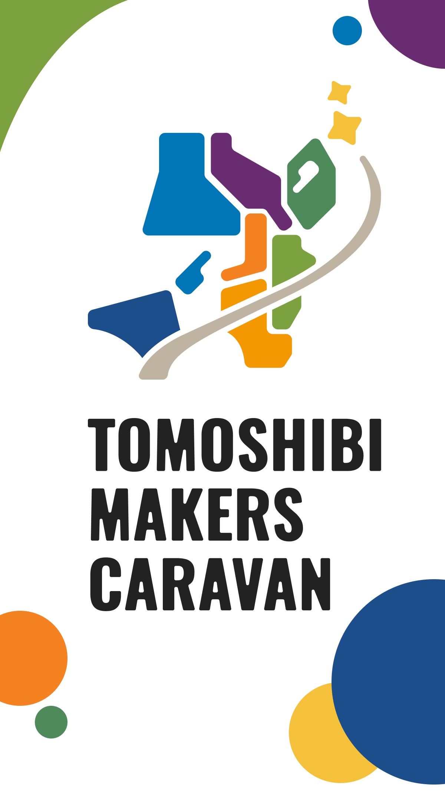
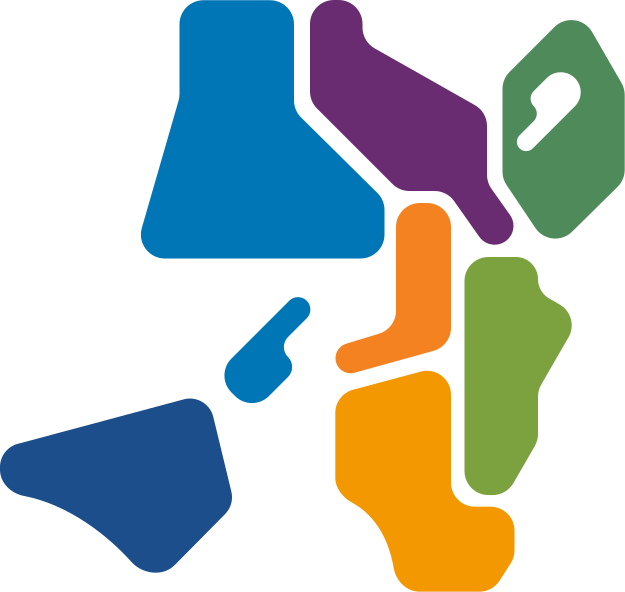

見つける
身近な困りごとや「あったらいいな」を見つける。


ABOUT
自分で見つけて、自分で考えて、自分でつくる。
TOMOSHIBI MAKERS CARAVANは、関西＋徳島をめぐる小中学生向けものづくり体験イベントです。子どもたちが自分の身の回りにある困りごとを見つけ、アイデアを考え、ものづくりを通して形にする体験を届けます。
身近な困りごとや「あったらいいな」を見つける。
どうすれば解決できるか、自分なりのアイデアを考える。
材料や道具を使って、アイデアを形にする。
MAP

SCHEDULE & PLACE
PROGRAM
観察から発表まで、発明ノートを進めるように体験します。
FOR PARENTS
ものづくりが初めてでも参加できます
スタッフがサポートします
室内開催です
事前申込制です
持ち物は会場ごとに案内します
写真・動画撮影の方針は申込時または会場詳細で案内します
体調不良時やキャンセルについては各申込ページで案内します
ATTENTION
FAQ
ORGANIZER
TOMOSHIBI MAKERS CARAVAN は、NPO法人燈が主催する小中学生向けものづくり体験イベントです。
Non Profit Organization
NPO法人燈は、子どもたちが自分の興味や問いを起点に、学び、つくり、挑戦できる機会を届ける団体です。STEM教育やものづくり体験を通して、一人ひとりの「やってみたい」に火を灯します。
01
科学・技術・工学・数学を、子どもたちが自分ごととして体験できる機会をつくります。
02
アイデアを考えるだけで終わらせず、実際に手を動かして形にする時間を大切にします。
03
初めてでも参加しやすい場をつくり、子どもたちの小さな挑戦を応援します。